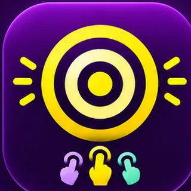
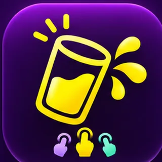

Ein bisschen Quatsch.
Ziemlich viel Spaß.
Wer muss? Wer trifft den perfekten Moment? Wer hat die schnellsten Finger? Hier entstehen kleine, eigenständige Apps für zwischendurch – und du kannst schon jetzt die ersten Versionen ausprobieren.
Unsere Mini-Apps
Jede Idee hat ihren eigenen Platz. Gleiche Farben, gleiche Handschrift – unterschiedliche Herausforderungen.
Wer muss?!
Alle legen einen Finger aufs Display. Der Countdown läuft. Ein Finger leuchtet – und die Frage ist geklärt. Schon als interaktive Multitouch-Browser-Demo ausprobierbar.

BROWSER-TESTPunktlandung!
Stoppe die Uhr bei exakt 5, 10 oder 15 Sekunden. Mit verdeckter Uhr wird es besonders fies.
Fingerchaos
Grüne Kreise treffen, korallfarbene meiden. 20 Sekunden, ein Ziel: so viele Punkte wie möglich.

BROWSER-TESTNicht kleckern!
Die Kaffeetasse wackelt. Halte dagegen und rette in 20 Sekunden möglichst viel Kaffee.
Nur noch einmal!
Blase den Ballon auf. Mehr Risiko bringt mehr Punkte – außer er platzt vorher.
Völlig daneben!
Absurd schwere Schätzfragen. Zwei bis vier Leute raten mit, die nächste Person ist dran.